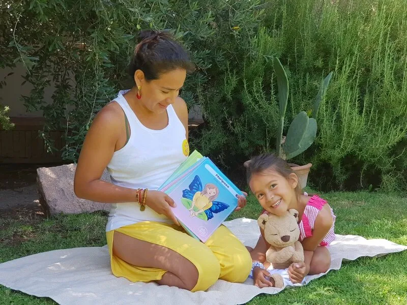

El proceso de enseñanza-aprendizaje es una sucesión de hechos que deben responder a diversas necesidades en torno a la infancia, educadores, familias y sus contextos. Desde nuestra visión como Yogakiddy, percibimos que el cuerpo requiere hacerse más presente que nunca para así comprender la naturaleza de niños y niñas, esa búsqueda de movimiento, de exploración, de descubrimiento mediante el canal kinestésico.
Una manera de acercar el yoga a la infancia, es a través del uso de material visual pudiendo responder también a la necesidad de percibir el mundo de los colores y las formas.
Las láminas Yogakiddy se convierten en una opción de juego constante donde existen variados usos para integrar el yoga a sus vidas.. Ellas nos permiten acompañar dicho proceso con un material atractivo y con multiplicidad de empleos en la planificación de actividades. Podremos aproximar el trabajo de asanas de manera contextualizada a la esencia de la infancia, respetando lo lúdico, lo sensorial y lo innovador, favoreciendo el cuidado de nuestro cuerpo para mantener una vida saludable y feliz.
Ideas de cómo usarlas:
- Cuentos: Pueden ser parte de alguna narración que quieras compartir junto a ellos y ellas, donde el uso de las láminas nos invitan a realizar una determinada postura de manera individual y/o grupal. Las láminas elegidas pueden ser según categoría y temática del cuento. El material se convierte en un apoyo para la narración.
- Bolsa misteriosa: Dentro de ella guardas ciertas posturas a trabajar y utilizando el factor sorpresa de manera lúdica, los niños/as sacan sin mirar una lámina para convertirse en el guía de la clase y mostrar al resto del grupo la asana obtenida.
- Estaciones del Yoga: Delimitar el espacio según tus intereses y creas estaciones donde en cada una de ellas, tendrán que hacer ciertas posturas, sus sonidos y todo lo que tu imaginación te diga. Ejemplos: Estación del Cielo (estrella, mariposa, águila, montaña) o Estación del Equilibrio ( árbol, avión, bailarín)
- Adivina quien soy: Le entregas a cada niño/a una lámina para que sea observada de manera individual, para luego por turnos ir entregando características del asana para que el resto del grupo la pueda adivinar. Cuando esta sea descubierta, todos y todas realizan la postura.
- Descubriendo sus nombres: En cada lámina encontrarás el nombre del asana en español y en sánscrito, lo que te permitirá abordar el proceso lecto-escritor. El juego consiste en que deben identificar cada letra para así obtener la lectura total para posteriormente hacer la postura descifrada. Para que realmente fomentes la lectura será necesario que cubras la imágen del asana, dejando sólo a la observación su nombre.